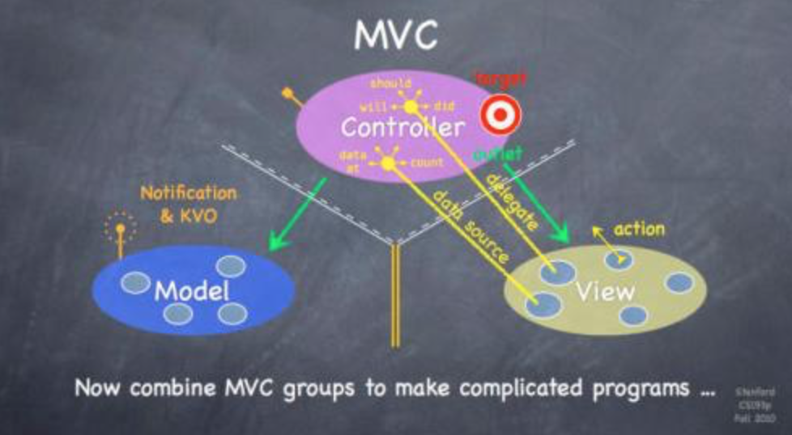

iOS开发基础之MVC模式
MVC模式是每一个IOS客户端编程人员都必须掌握的基本功。
先上图，后面会有解释。

然后来几句前人总结的话：
MVC是世界上最古老、最成功的可复用软件设计模式之一。MVC定义了Cocoa框架的总体结构。MVC的主要目的是解除模型子系统和视图之间的耦合，这样它们就可以独立变化。
下面开始甩干货。
M-数据，一般来说就是和网络交互的模块类。
C-控制器，很多情况下就是UIViewController，也可以是其他的类。
V-视图，UIView之类的。
我读到的每本讲述设计模式的书在第一章都会大篇幅的叙述这一模式，这包括GoF的《设计模式-可复用面向对象软件的基础》、Erik M. Buck和Donald A. Yacktman所著的《Cocoa设计模式》以及Carlo Chung的《Objective-C编程之道-iOS设计模式解析》。那么，为什么呢？
理由有很多，在我看来，最重要的就是一点：这种方式设计出的程序可以较好的面对变化。对于客户端程序员来说，这无疑是非常重要的。而且，这样的代码结构明晰，可读性会比较好。
场景
在未使用这种模式之前，考虑这样一种简单的情况。设计一个view，它的上面有一个UITableView。在程序中多个地方都会用到它，只是有细微的不同。在未使用MVC之前，它的设计可能是这样的：
UITableView的Delegate和Datasource都指向这个view，view中会有网络通信的逻辑，它可能还会访问数据库；总之，就是这个view包含了对于业务数据的处理。
结果可想而知，这个view很难进行复用，也就是说如果这个view想要在另一个地方使用就必须修改其中的代码（可复用的代码是完全或者几乎不需要进行修改的）。而且，这个view的代码行数会非常长，可读性也会比较低。
为了解决这类问题，我们可以使用MVC来帮助我们。在使用之前，我们先对上面的那幅图进行一些解读。
读图
下面分析一下三个模块之间的关系，由图可知：
M和V之间不能通信，因为V是客户直观面对的，是要经常变化的，M则要稳定得多。
C向V通过Outlet进行引用（绿线）。
V向C通过Delegate、Datasource以及action/target进行通信（黄线，箭头/靶子）。
C向M通过引用进行访问（绿线）。
M向C通过notification和KVO进行通信（橙色电波发射器）。
下面进行详细的论述。其实对于View应该怎么设计Cocoa的很多类都做出了很好的榜样，例如UITableView、UITextField等等。
delegate和datasource的区别
惭愧，这个也是近几个月才弄明白。以前一直用UITableView，一直没想过它们的区别。反正用呗，实现几个方法就是了。
delegate是V用来向C通知自己的状态改变或事件发生的，datasource是V用来从C获取必要的数据的，它们的数据流向是相反的。它们所指向的对象可以是不同的。使用它们的好处就是View不知道自己所影响的对象和影响自己的对象到底是谁，这极大的降低了C/V间的耦合性。很好的例子就是UITableView。
- 可复用的代码
可复用的代码理论上要做到不修改任何代码就能供多个地方使用。通过提供协议接口或者配置文件修改类的各种信息。这样响应需求变化的速度要快得多。 - Model和Controller之间为什么不通过代理（回调）进行通信
理论层面
Model很多情况下是异步网络通信。而约定俗成的引用规则是，当对象之间是包含（拥有）的关系时，才会对retainCount进行+1操作；当只是一个代理引用时，默认应该使用assign，即不修改retainCount。这种约定是有道理的。因为如果使用retain的话，这两个对象实际上是强相关的，因为其中一个控制着另一个的生命周期。
这种约定的结果就是，我们需要使用assgin的方式来进行引用。这样的话，Model对象所引用的Controller对象在网络请求返回时可能已经释放掉了。这会导致程序的严重错误。
应用层面
retain的方式有可能造成循环引用，造成永远无法释放的情况。假如A创建并retainB，B创建并retainC，C创建并retainB。当A生命周期结束，release B的时候，实际上是释放不掉的，因为B和C形成了循环引用。如果这两个对象不能主动的破坏掉循环的话，它们永远不会被释放。
而assign的方式上面已经说了，可能会导致引用的时候对象已经被释放。
一般流程
一般来说，当我们的View加载到屏幕上时，它就会通过Datasource向Controller请求数据（例如请求cell的行数）。这时，如果Controller中并没有准备好数据，就会返回没准备好（例如cell行数为0）。这样View就会停止更新页面。
Controller在某一时间会向Model请求数据（这和View的请求没有必然关系），很多时候这是异步的（例如网络请求）。当Model准备好数据时，它会通过notification（通知）或者KVO来通知Controller自己做好准备了。这时，Controller可以通过Outlet调用更新方法通知View进行更新（例如-[UITableView reloadData]）。然后View会通过Datasource获取后续的各种数据。
当用户对View进行了某些操作时，View可以通过Delegate或者target/action通知Controller做出响应。
三个模块间使用的主要设计模式
delegate、datasource 代理模式
MVC关系 策略模式，中介者模式
notification、KVO 观察者模式
target/action 命令模式
场景之MVC
对于上面的场景，如果利用MVC设计，_尽可能简单的考虑_，大概是这样的：
View：
首先创建两个协议，分别是用于委托的delegateProtocol和用于获取数据的datasourceProtocol。里面分别定义了一些需要使用的方法。
声明两个实例变量，分别为delegate和datasource，它们分别遵循创建的两个协议。这样，view当中只包含用于展示的代码，而将数据的获取以及事件的处理交给外部进行实现，保证了view的可复用性。
Model：
通过notification对Controller进行数据的返回。
Controller:
实现delegateProtocol和datasourceProtocol，与MV进行通信。此处delegateProtocol、datasourceProtocol可以指向别处，比如Controller的一个实例变量。这样，Controller中的代码量会比较少，而且通过配置文件等方式还可以运行时动态的更改datasource的提供者和事件的处理者。
当然了，当软件的功能较为简单，需求变化较少时，完全可以不使用MVC。毕竟这种模式还是比较麻烦的，直接MV也是很好的一种选择。
总结
以上就是我对于MVC的一些见解，请大家在日常软件开发过程中多体会其中的思想。